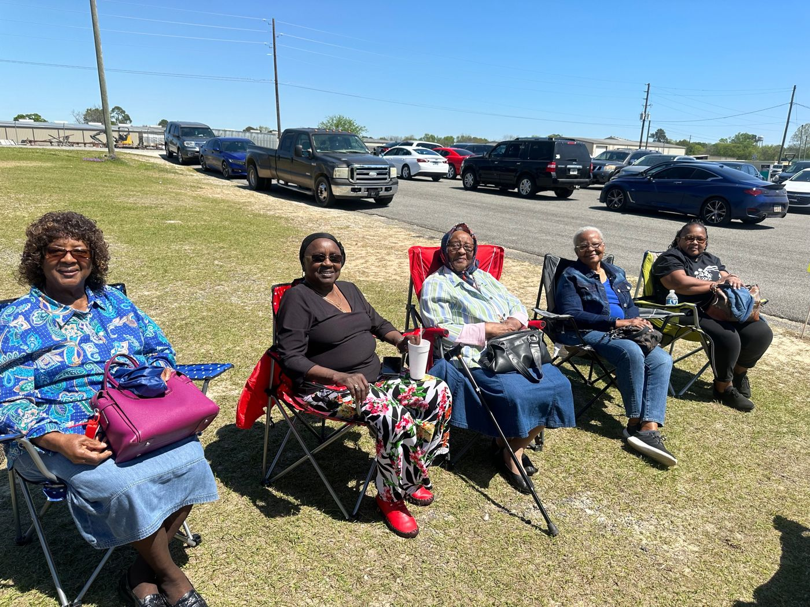

Events
Grow in faith and fellowship with us at events throughout the year.
Upcoming Events
August
Fall Revival
Our revivalist is Rev. Willie Green of Forest Chapel Baptist Church.
September
Tailgating for Jesus Fall Festival
Join us for a fall festival of fellowship, food and fun.
November
Breakfast of Champions
A community outreach initiative.
December
Angel Tree for Community Children
Helping bring Christmas joy to children in our community.
Recent Moments


